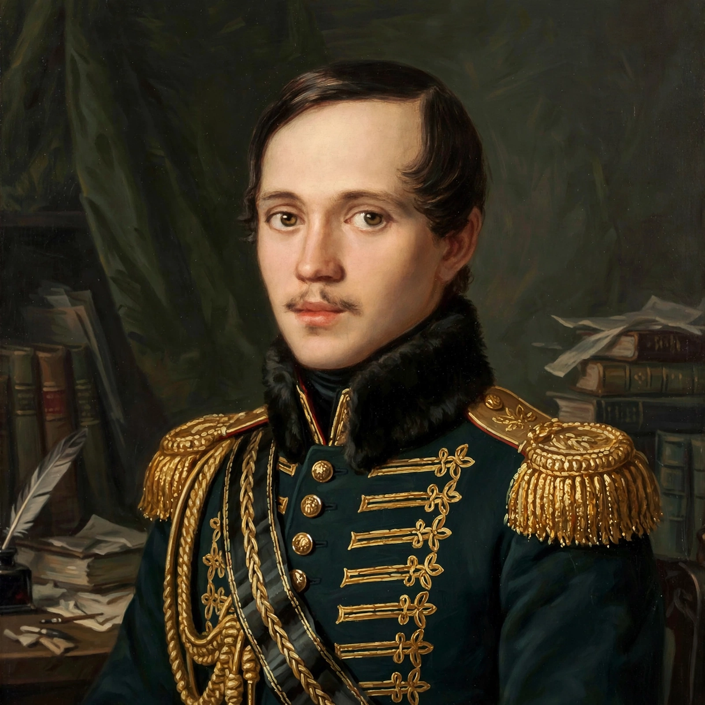

Mikhail Yuryevich Lermontov (15 October [O.S. 3 October] 1814 – 27 July [O.S. 15 July] 1841) was a Russian Romantic writer, poet and painter, sometimes called the poet of the Caucasus. After Pushkin's death he became the most important Russian poet of his generation; his novel A Hero of Our Time (1840) is a founding work of Russian psychological prose. He died in a duel at age 26.

| Born | 15 October 1814, Moscow, Russian Empire |
|---|---|
| Died | 27 July 1841 (aged 26), Pyatigorsk |
| Occupation | Poet, novelist, playwright, officer |
| Notable works | A Hero of Our Time, Demon, Borodino |
Raised by his grandmother at Tarkhany in Penza province after his mother's death, Lermontov studied at Moscow University and then at the School of Guards in St Petersburg, becoming a hussar officer. His poem Death of the Poet (1837), blaming court society for Pushkin's death in a duel, led to his exile to a dragoon regiment in the Caucasus, whose mountains and peoples deeply shaped his writing.
His verse drama Masquerade, the narrative poems The Demon and Mtsyri, and lyrics of love, nature and fatalistic rebellion made him famous. A Hero of Our Time presents the Byronic officer Pechorin through layered narratives, prefiguring the Russian psychological novel of Dostoevsky and Tolstoy.
Exiled a second time after a duel in 1840, Lermontov was killed in Pyatigorsk in a duel with former classmate Nikolai Martynov, echoing Pushkin's fate. His influence on Russian literature, music (settings by many composers) and painting — he left accomplished watercolours of the Caucasus — remains immense.